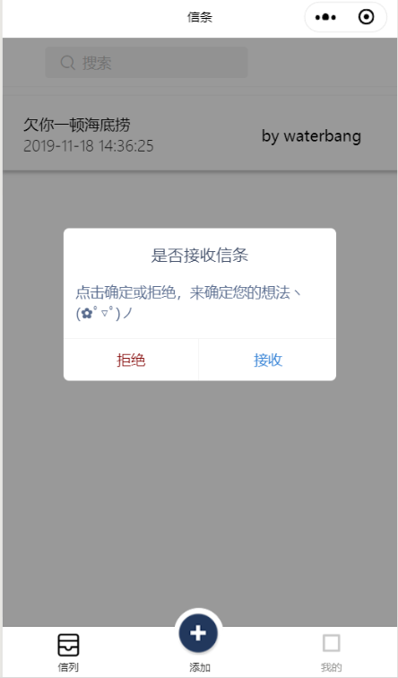
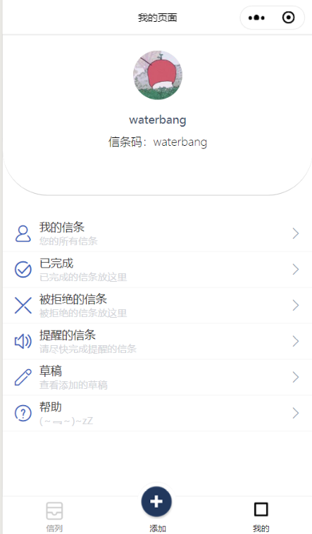

小程序-5毛钱信条
本文最后更新于：5 hours ago
五毛钱信条
首先用大白话概括一下小程序功能：将你的承诺变成信条，发送给别人，在别人需要的时候来找你兑现。
（假如我要请你吃冰淇淋，但是你现在不想吃，我给你发个信条，在你想吃的时候找我兑现🚲）
扫描小程序体验
这次写小程序刚好赶上了小程序开放了云开发，真的是个人开发者的福音。
但是我觉得云开发还是辅助就好，一个好的小程序必须得后端加云开发，这样会显得更加成熟一点。
界面🌈
- 页面内容采用了Lin-ui 林间有风团队出品👍（七月老师真的大牛，🏃去买课）。
- 自定义tarBar采用的是wxapp-customTabbar SuRuiGit大佬 出品👍。
 
遇到的问题🈶
在云开发中所有更改别人数据的操作需要通过云函数来完成。（直接贴个码)
// 云函数入口文件 const cloud = require('wx-server-sdk') cloud.init() const db = cloud.database(); // 云函数入口函数 exports.main = async (event, context) => { try { return db.collection('item').doc(event._id) .update({ data: { lover: event.lover, lock:1 } }) .then(res => { return res; }) .catch(err => { return err }) } catch (e) { console.error(e) } }
记得每次写完云函数记得上传，然后这样使用✅。
/**
* 更改状态
*/
upItemState(_id,lock){
return wx.cloud.callFunction({
name: 'upItemState',
data: {
_id: _id,
lock: lock,
}
}).then(res => {
return res;
}).catch(err => {
return err;
})
}
分享两个使用函数 📊
我在做home页面的动画时候，如果点击得很快，文字和头像就会跳来跳去，就加了个防抖。
但是我偷懒防抖做得很简单，下面的是正规军。（不知道哪里复制粘贴的）
/**
* @desc 函数防抖
* @param func 函数
* @param wait 延迟执行毫秒数
* @param immediate true 表立即执行，false 表非立即执行
*/
debounce(func, wait, immediate) {
let timeout;
return function() {
let context = this;
let args = arguments;
if (timeout) clearTimeout(timeout);
if (immediate) {
var callNow = !timeout;
timeout = setTimeout(() => {
timeout = null;
}, wait)
if (callNow) func.apply(context, args)
} else {
timeout = setTimeout(function() {
func.apply(context, args)
}, wait);
}
}
}
/**
* @desc 函数节流
* @param func 函数
* @param wait 延迟执行毫秒数
*/
throttle(func, wait) {
let previous = 0;
return function () {
let now = Date.now();
let context = this;
let args = arguments;
if (now - previous > wait) {
func.apply(context, args);
previous = now;
}
}
}
学到了什么 🉐
- 小程序组件化开发。
- 小程序云开发。
- 复习了ES6。
- 如何实现递归下拉刷新最新数据。
- 将学习到的函数式编程运用到小程序。
- 如何在小程序使用自定义tarBar
结束语 🏐
春风未了秋风到，老去万缘轻。——「少年游·枫林红透晚烟青」蒋捷
本博客所有文章除特别声明外，均采用 CC BY-SA 4.0 协议 ，转载请注明出处！